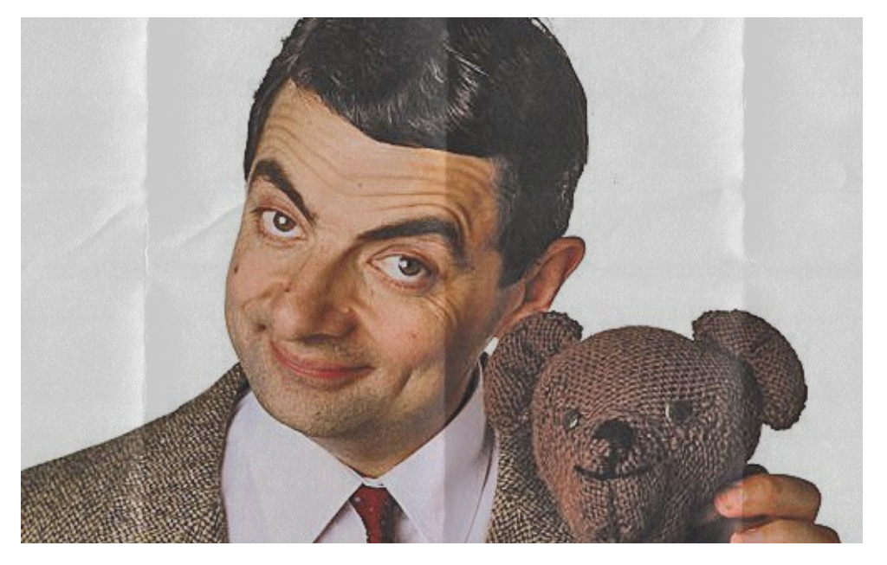
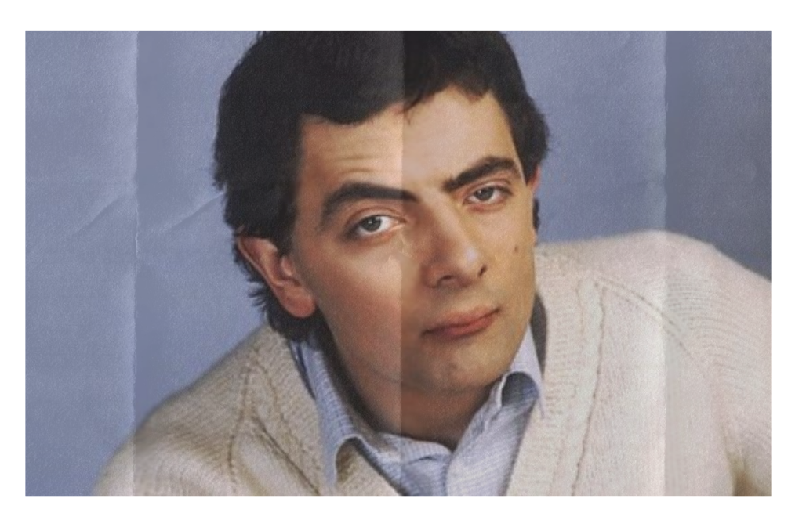

Who is Rowan Atkinson?
Rowan Sebastian Atkinson (born January 6, 1955) is a British comedian, actor, writer known for the television series Blackadder and Mr. Bean. According to The Observer, he is one of the 50 funniest people in Britain. He was born in Consett, County Durham, in 1955 to Eric Atkinson, a farmer and company director, and his wife Ella May. His brother is politician Rodney Atkinson. He attended Durham Choristers School, then St Bees School, and studied electrical engineering at Newcastle University. While at school, he was classmates with former Prime Minister Tony Blair. He later earned an M.Sc. from Queens College, Oxford.


Success: Biggest Challenges
Throughout his formative years, Rowan faced adversity in the form of bullying and teasing related to his appearance and speech disability. The taunts and mockery left scars, but they also fueled his determination to prove his detractors wrong. Despite these challenges, Rowan found solace in his studies and developed a burgeoning interest in acting. As he began his acting journey, Rowan encountered numerous obstacles. His stammer was a significant barrier, casting doubt on his ability to succeed in a field where verbal communication was crucial. Despite facing repeated rejections during auditions, he refused to be deterred, driven by an unwavering belief in his own abilities and a burning desire to realize his dreams.
Rejection and Struggles
After completing his Master’s degree, Rowan boldly decided to pursue acting wholeheartedly. However, the path was fraught with challenges. He faced rejection after rejection, with casting directors often citing his appearance and speech impediment as insurmountable obstacles. Yet, Rowan remained undaunted, determined to carve out a place for himself in the competitive entertainment industry. The road to success was not easy. He grappled with self-doubt and moments of despair, questioning whether he had what it took to thrive in an industry that seemed intent on shutting him out. However, with each setback came renewed resolve to persevere, fueled by the belief that his talent and determination would ultimately triumph over adversity.


|
SUCCESS KNOWS NO BOUNDS |

|
| Rowan Atkinson’s journey is a powerful reminder of the resilience of the human spirit and the transformative power of perseverance. His story demonstrates that success knows no bounds for those who refuse to be defined by their limitations. Through sheer determination and unwavering belief in himself, Rowan overcame adversity to become one of the most beloved and respected figures in entertainment. His life teaches us that with courage, resilience, and a steadfast commitment to our dreams, there are truly no boundaries to what we can achieve. |
Victory: His Best Works |
| • “Not the Nine O’Clock News” (1980–1982): Rowan’s breakthrough role in this acclaimed comedy series earned him the BAFTA Award for Best Entertainment Performance in 1981. |
| • “Blackadder” (1983–1989): His portrayal of the cunning Edmund Blackadder in this historical sitcom garnered widespread acclaim and solidified his status as a comedic genius. |
| • “Mr. Bean” (TV Series and Films): The iconic character of Mr. Bean, played by Rowan with silent yet uproarious comedy, became a global phenomenon, leading to both a successful television series and feature films. |
| • “Johnny English” Series: His portrayal of the bumbling secret agent Johnny English delighted audiences worldwide, showcasing his versatility as a performer. |
|  |
|  |